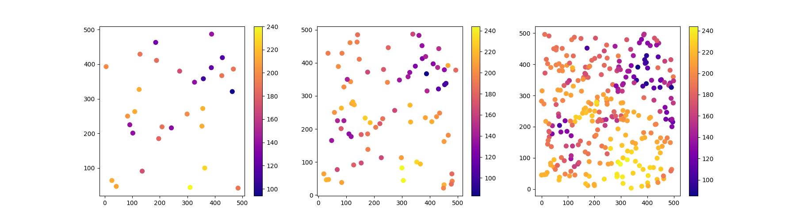

Note
Click here to download the full example code
2 - Semi-variance Estimators#
This tutorial focuses on experimental variograms. It will guide you through the main semi-variance estimators available in SciKit-GStat. Additionally, most of the parameters available for building ### an experimental variogram will be discussed.
In this tutorial you will learn:
what estimators are available
how they differ
import skgstat as skg
import pandas as pd
import numpy as np
import matplotlib.pyplot as plt
from scipy.ndimage import zoom
skg.plotting.backend('matplotlib')
2.1 Load data#
This tutorial will use the same data samples as the models tutorial. These are samples from the pancake image sampled at different sample sizes. We will use only the second one, but you can re-run all the examples with any of the other fields.
make a nice overview of the samples
2.2 Comparing estimators#
calculate all variograms, but use only the second one
V1 = skg.Variogram(data2[['x', 'y']].values, data2.v.values, normalize=False, n_lags=8, use_nugget=True)
V2 = skg.Variogram(data2[['x', 'y']].values, data2.v.values, normalize=False, n_lags=15, use_nugget=True)
V3 = skg.Variogram(data2[['x', 'y']].values, data2.v.values, normalize=False, n_lags=25, use_nugget=True)
vario = V2
The default estimator configured in Variogram
is the Mathéron estimator
(Mathéron, 1963). It is defined like:
where:
\(h\) is the distance lag
\(h\) is the number of observation pairs in \(h\)-lag class
\(Z(x_i)\) is the observation at the \(i\)-th location \(x\)
vario.plot(show=False)
Out:
<Figure size 800x500 with 2 Axes>
Following the histogram, we should set a maxlag.
This property accepts a number 0 < maxlag < 1 to set the maxlag
to this ratio of the maximum separating distance. A number > 1 will use this at an absolute limit.
You can also pass 'mean' or 'median'.
This will calculate and set the mean or median of all distances in the
distance matrix as maxlag.
vario.maxlag = 'median'
vario.plot(show=False);
Out:
<Figure size 800x500 with 2 Axes>
2.3 Alternative estimators#
SciKit-GStat implements more than only the Mathéron estimator.
Setting estimator='cressie'
will set the Cressie-Hawkins estimator.
It is implemented as follows (Cressie and Hawkins, 1980):
By setting estimator='dowd',
the Dowd estimator (Dowd, 1984) will be used:
Finally, estimator='genton'
will set the Genton estimator (Genton, 1998):
with:
and:
fig, _a = plt.subplots(1, 3, figsize=(12, 3), sharey=True)
axes = _a.flatten()
for ax, estimator_name in zip(axes, ('matheron', 'cressie', 'dowd')):
vario.estimator = estimator_name
vario.plot(axes=ax, hist=False, show=False)
ax.set_title(estimator_name.capitalize())
The important part is here that the effective range as well as the sill is changeing for the estimator. This will likely change the Kriging result. For Kriging, the difference on the first few lag classes is important, as no points will be used for estimation, that lies outside the range. We will zoom in, to actually use a higher resolution. Thus the results will be quite smooth.
xx, yy = np.mgrid[100:199:100j, 0:99:100j]
fig, _a = plt.subplots(1, 3, figsize=(18, 6))
axes = _a.flatten()
fields = []
for ax, est in zip(axes, ('matheron', 'cressie', 'dowd')):
vario.estimator = est
ok = skg.OrdinaryKriging(vario, min_points=5, max_points=15, mode='exact')
field = ok.transform(xx.flatten(), yy.flatten()).reshape(xx.shape)
fields.append(field)
art = ax.matshow(field, origin='lower', cmap='plasma', vmin=vario.values.min(), vmax=vario.values.max())
plt.colorbar(art, ax=ax)
ax.set_title(est.capitalize())
It’s hard to see this by eye, but there are actually some differences. Let’s load the original field as well and see which estimator performed best.
pan = skg.data.pancake_field().get('sample')
# rescale to 100x100
# pan = zoom(pan, 0.2)
# select the same extend
pan = pan[100:200, 0:100]
fig, axes = plt.subplots(2, 2, figsize=(10,10), sharex=True, sharey=True)
# original
m = axes[0][0].matshow(pan, origin='lower', cmap='Reds_r')
plt.colorbar(m, ax=axes[0][0])
axes[0][0].set_title('Original')
# matheron
m = axes[0][1].matshow(np.abs(pan - fields[0]), origin='lower', cmap='YlGn_r', vmin=0, vmax=25)
plt.colorbar(m, ax=axes[0][1])
axes[0][1].set_title(f'|Original - Matheron|; Diff: {np.abs(pan - fields[0]).mean().round(1)}')
# cressie
m = axes[1][0].matshow(np.abs(pan - fields[1]), origin='lower', cmap='YlGn_r', vmin=0, vmax=25)
plt.colorbar(m, ax=axes[1][0])
axes[1][0].set_title(f'|Original - Cressie| Diff: {np.abs(pan - fields[1]).mean().round(1)}')
# dowd
m = axes[1][1].matshow(np.abs(pan - fields[2]), origin='lower', cmap='YlGn_r', vmin=0, vmax=25)
plt.colorbar(m, ax=axes[1][1])
axes[1][1].set_title(f'|Original - Dowd| Diff: {np.abs(pan - fields[2]).mean().round(1)}')
plt.tight_layout()
In the extracted part of the field, quite some differences are visible. The Matheron estimator is less robust and can’t capture the higher values in the upper left corner not as quite well as the other estimators. One can also see, that a substantial amount of the deviations are caused by the noisy character of the original image. Note that we loaded the field without applying any kind of filter to it.
2.4 References#
Cressie, N., and D. Hawkins (1980): Robust estimation of the variogram. Math. Geol., 12, 115-125.
Dowd, P. A., (1984): The variogram and kriging: Robust and resistant estimators, in Geostatistics for Natural Resources Characterization. Edited by G. Verly et al., pp. 91 - 106, D. Reidel, Dordrecht.
Genton, M. G., (1998): Highly robust variogram estimation, Math. Geol., 30, 213 - 221.
Matheron, G. (1963). Principles of geostatistics. Economic Geology, 58(8), 1246–1266. https://doi.org/10.2113/gsecongeo.58.8.1246
Total running time of the script: ( 0 minutes 9.512 seconds)